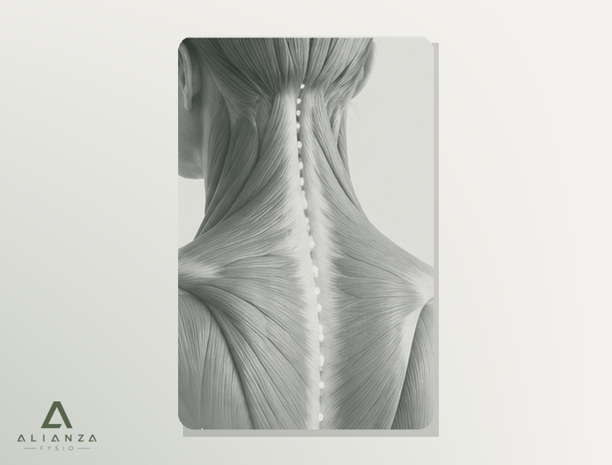
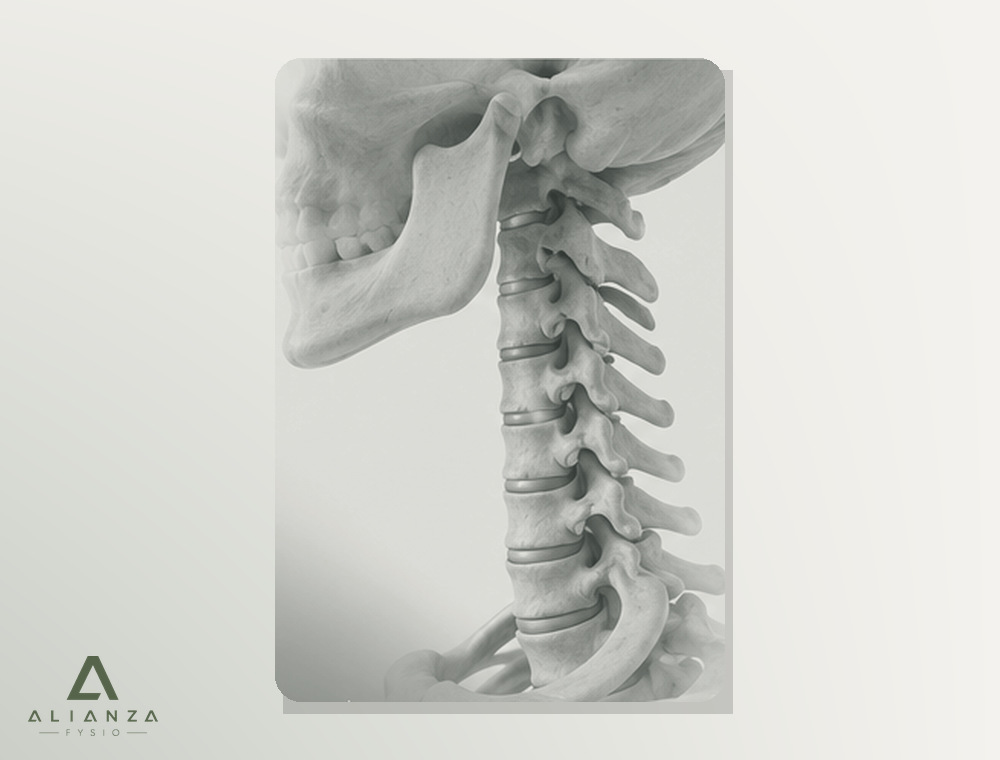
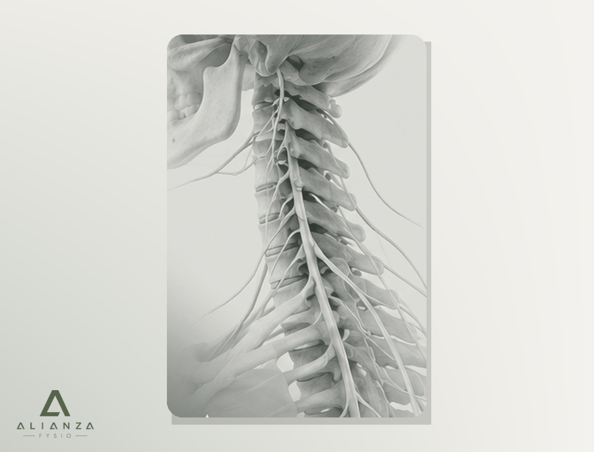
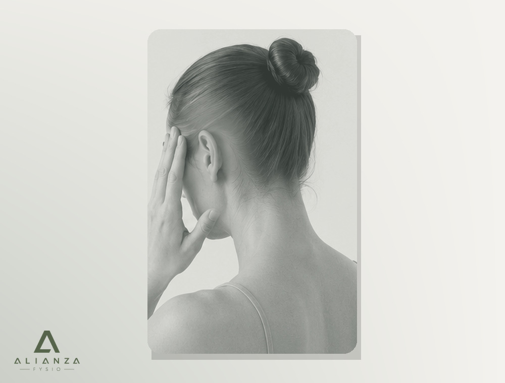
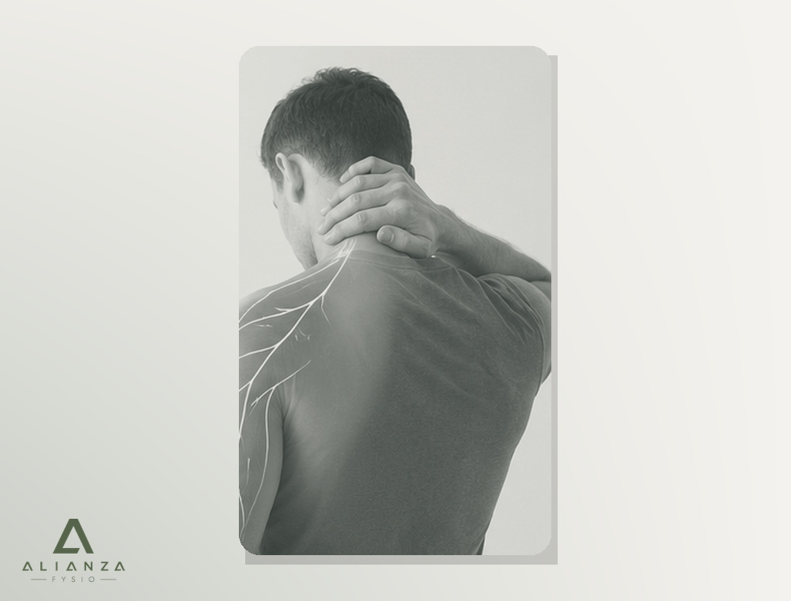

Stijf bij draaien
Bij autorijden, werken, sporten of wakker worden.
Pijn, stijfheid, hoofdpijn of uitstraling naar de arm kunnen verschillende oorzaken hebben. Wij helpen u begrijpen wat uw klacht beïnvloedt en hoe u weer met vertrouwen kunt bewegen.

Uw nek is sterk en beweeglijk. Klachten worden vaak beïnvloed door belasting, gevoeligheid, slaap, stress en herstel. Ons doel is niet alleen pijn verminderen, maar ook onzekerheid wegnemen.
De plaats van de pijn is slechts een deel van het verhaal. Het patroon helpt ons begrijpen welke factoren waarschijnlijk meespelen.
Bij autorijden, werken, sporten of wakker worden.
Vanuit nek of schouders naar achterhoofd, slaap of rond het oog.
Een zeurend of trekkend gevoel rond schouderblad en bovenrug.
Met pijn, tintelingen, een veranderd gevoel of soms minder kracht.
Pijn vertelt dat uw lichaam aandacht vraagt. Het vertelt niet automatisch dat er schade is.
Twee mensen kunnen dezelfde pijnplek aanwijzen en toch een ander klachtenpatroon hebben. Daarom onderzoeken we niet alleen waar het pijn doet, maar vooral waarom de klacht zich zo gedraagt.

Spieren kunnen reageren op langdurige belasting, training, stress of onvoldoende herstel. Ze kunnen lokaal gevoelig zijn of pijn verwijzen naar schouder en hoofd.

De kleine gewrichten van de nek begeleiden beweging. Ze kunnen tijdelijk gevoeliger of minder soepel worden, vooral in een specifieke richting.

Een zenuw kan gevoelig raken door irritatie of verminderde ruimte. Het klachtenpatroon geeft richting, maar kracht, gevoel en reflexen helpen ons het onderscheid te maken.

Ja. Spieren en gewrichten in de bovenste nek kunnen pijn verwijzen naar achterhoofd, slaap of rond het oog. We beoordelen ook of het patroon beter past bij migraine, spanningshoofdpijn of een andere oorzaak.

Uitstraling kan afkomstig zijn van een zenuw, maar ook van spieren of gewrichten. Tintelingen, gevoelsverandering en krachtsverlies maken neurologisch onderzoek extra belangrijk.
Er bestaat geen perfecte houding die nekpijn voorkomt. Voor veel mensen is langdurig in één positie blijven belangrijker dan de exacte hoek van hoofd of schouders.
Wissel zitten, staan en bewegen af.
Onderbreek langdurige statische belasting.
Train kracht en uithoudingsvermogen rond nek en schouders.
Slaap, stress, werk en sport bepalen samen uw belastbaarheid.
We starten niet met een techniek. We starten met begrijpen.
Uw verhaal, zorgen, doelen en verwachtingen staan centraal.
Beweging, spierfunctie, gewrichten en indien nodig kracht, gevoel en reflexen.
U krijgt een begrijpelijke verklaring, prognose en duidelijke veiligheidsinformatie.
Een persoonlijk plan met oefeningen, advies en hands-on zorg waar passend.
Er is geen standaardprotocol dat voor iedereen hetzelfde werkt. We kiezen zo weinig mogelijk, maar zo veel als nodig.
Minder onzekerheid en betere keuzes in het dagelijks leven.
Mobiliteit, kracht, coördinatie en belastbaarheid.
Om bewegen tijdelijk gemakkelijker te maken.
Wanneer relevante spiergevoeligheid onderdeel is van het patroon.
Herstel vertaald naar uw echte activiteiten en doelen.
Een plan waarmee u klachten zelfstandig leert opvangen.
Een 42-jarige projectmanager had nekpijn en hoofdpijn aan het einde van werkdagen. Er waren geen aanwijzingen voor zenuwuitval. Het patroon paste beter bij spiergevoeligheid, verminderde nekbeweging en een plotseling hogere werkbelasting. Met uitleg, gerichte oefeningen, meer variatie en tijdelijke hands-on behandeling namen de klachten geleidelijk af.
Dit voorbeeld is illustratief. Hersteltempo en resultaten verschillen per persoon.Bij de meeste nekklachten is een MRI of röntgenfoto niet nodig. Scans laten vaak veranderingen zien die ook voorkomen bij mensen zonder pijn. Beeldvorming is vooral zinvol wanneer de uitslag een medische beslissing kan veranderen.
Beweeg binnen comfortabele grenzen en vermijd langdurige volledige rust.
Onderbreek lang zitten en kies regelmatig een andere positie.
Gebruik de reactie na activiteit om de volgende stap te bepalen.
Nee. De meeste nekklachten zijn niet het gevolg van een ernstige aandoening. Een zorgvuldig onderzoek is wel belangrijk wanneer klachten na een ongeval ontstaan, snel toenemen of samengaan met neurologische verschijnselen.
Stress is zelden de enige oorzaak, maar kan spierspanning, slaap, herstel en pijngevoeligheid beïnvloeden.
Ja. Vooral gewrichten en spieren in de bovenste nek kunnen pijn naar het hoofd verwijzen. Hoofdpijn kan echter meerdere oorzaken hebben.
Uitstraling kan verwezen pijn zijn vanuit spieren of gewrichten, maar ook het gevolg van zenuwirritatie. Tintelingen, gevoelsverandering en krachtsverlies maken neurologisch onderzoek belangrijk.
Bij de meeste nekklachten niet. Beeldvorming is vooral zinvol wanneer de uitslag het behandelbeleid waarschijnlijk verandert.
Veel mensen herstellen zonder operatie. Fysiotherapie kan helpen met uitleg, passende beweging, opbouw van activiteit en het monitoren van kracht en gevoel.
Vaak wel, met tijdelijke aanpassingen. Bij krachtsverlies, instabiliteit na trauma of snel toenemende symptomen is eerst beoordeling nodig.
Dat hangt af van klachtenduur, beperkingen, hersteltempo en doelen. Na de eerste afspraak bespreken we een realistische eerste behandelperiode.
Deze informatie is algemene patiëntvoorlichting en vervangt geen individuele medische beoordeling.
Tijdens uw eerste afspraak nemen we de tijd om uw verhaal te begrijpen, uw nek zorgvuldig te onderzoeken en samen een plan op te stellen dat past bij uw doelen.
Beweeg beter. Voel u beter. Leef beter.